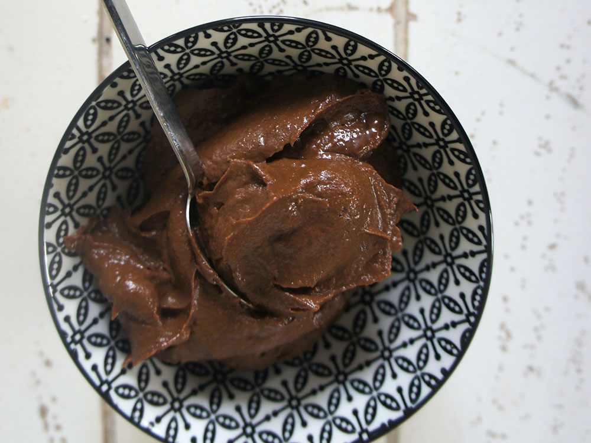

Chocolate pudding

Description
Quick and easy chocolate pudding made with only 5 ingredients.
This recipe makes 6 servings.
Ingredients
- 3 cups whole milk, divided
- 1/4 cup cornstarch
- 1/3 cup white sugar, or more to taste
- 1 cup semisweet chocolate chips
- 1 pinch salt (Optional)
Steps
- Combine 1/2 cup milk and cornstarch in a small bowl.
Whisk or stir with a fork until smooth and all lumps
have been incorporated.
- Combine remaining milk with sugar in a medium saucepan
over low heat. Slowly whisk in the cornstarch mixture.
Cook, whisking as needed to prevent lumps from forming,
until mixture begins to thicken, 8 to 10 minutes.
Add chocolate chips and salt. Continue stirring until
chips are completely melted and pudding is smooth and
thickened, about 7 minutes more.
- Pour pudding into 1 large bowl or 6 individual bowls.
Place plastic wrap directly on top of the pudding to
prevent a skin from forming; smooth it gently against
the surface. Refrigerate for at least 3 to 4 hours
before serving.